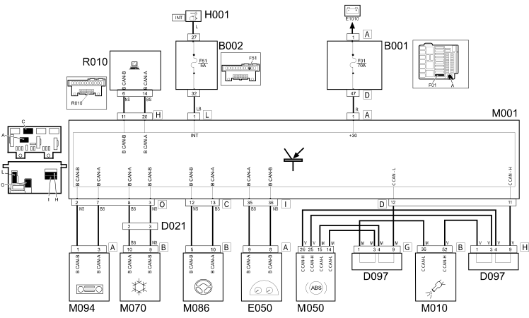

E1050 CAN CONNECTION LINES - WIRING DIAGRAM
- Path
- Electrical equipment > 1 ELECTRICAL FUNCTIONS > E10 POWER SUPPLY AND EARTHS > E1050 CAN CONNECTION LINES > E1050 CAN CONNECTION LINES - WIRING DIAGRAM
- Kind
- wiring diagram
- Applies to
- engines: 1.2 8v; all production periods; only with equipment: 4x4 and POWERED THROTTLE
- Interactive page
- https://sloeber94.github.io/elrnDB-fPnd/en/#/169002272
Applies to: engines: 1.2 8v; all production periods; only with equipment: 4x4 and POWERED THROTTLE
Wiring Diagram

COMPONENTS
Component code | Description | Reference to the assembly |
|---|---|---|
JUNCTION UNIT | ||
Junction unit under dashboard | ||
D21 | DASHBOARD/AIR CONDITIONING-HEATER CONNECTION | - |
D97 | SHORT CIRCUITING COUPLING | - |
ENGINE CONTROL AND MANAGEMENT SYSTEMS | ||
BODY COMPUTER | ||
ENGINE MANAGEMENT ECU | ||
ABS control unit | ||
Climate control system control unit | ||
Radio Receiver Node | - |
Topics linked from this page (14)
- 1056B multi-point injection system (mpi)
- 3340A abs check/adjustment devices
- 5505A multi-function components
- 5505C vehicle compartment wiring
- 5540D FOG LAMPS
- 5560B analogue control panel
- B001 JUNCTION UNIT
- B002 JUNCTION UNIT UNDER DASHBOARD
- E050 INSTRUMENT PANEL
- M001 BODY COMPUTER
- M010 ENGINE MANAGEMENT ECU
- M050 ABS CONTROL UNIT
- M070 CLIMATE CONTROL SYSTEM CONTROL UNIT
- M094 RADIO RECEIVER NODE